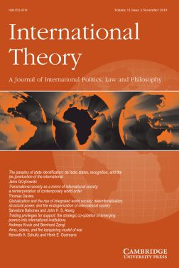
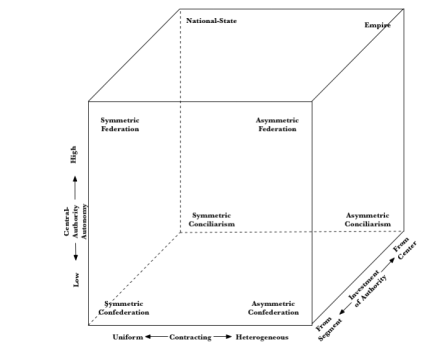

收录于合集 #理论研究 96个

作品简介
【作者】
Meghan McConaughey : 梅根·麦康纳，美国政治学会会员。
Paul Musgrave：保罗·穆斯格雷夫，马萨诸塞阿默斯特大学助理教授。
Daniel Nexon：丹尼尔·尼克森，乔治敦大学政府与外交学院副教授。
【编译】 袁蕙珈（国政学人编译员，外交学院国际关系研究所）
【校对】 王俞欢
【审核】 姚寰宇
【 排版 】 王国伟
【来源】
Mcconaughey,M.,Musgrave,P.,& Nexon,D.H.(2018). Beyond anarchy: Logics of political organization, hierarchy, and international structure. International Theory , 10 (2), 181-218.Doi:10.1017/S1752971918000040
期刊介绍

《国际理论》（International Theory），是一本经同行评审的期刊，致力于促进有关世界政治积极、法律和规范方面的理论学术研究。2018年该期刊影响力因子为1.263，在“国际关系”类别的91种期刊中排名第51。
超越无政府状态：政治组织、等级制度、与国际结构的逻辑
Beyond Anarchy: Logics of Political Organization, Hierarchy, and International Structure
内容提要
一些学者主张不再强调国际无政府状态的重要性，而应将重点放在世界政治中的等级制（上级和从属模式）上。文章认为，只有一种垂直等级结构，即治理等级（governance hierarchy）实际上挑战了无政府状态下的国家框架。但是，这种等级制度的存在推翻了许多研究世界政治的标准方法。为了从理论上确定世界政治中治理结构的变化，文章提倡一种关系方法，该方法着眼于 等级制的三个维度：契约的异质性（the heterogeneity of contracting），中央权威享有的自治程度（the degree of autonomy enjoyed by central authorities）以及中央和各部门之间的权威分配和平衡（the balance of investiture between segments and the center）。这产生了八种理想典型形式：民族国家和帝国，联邦和邦联以及教会体系（conciliar systems）的对称与不对称变体。 文章认为，具有这些理想类型的元素的政治形式（治理组合）存在于世界政治的多个层面（主权国家内，跨国和国家之间）。文章的框架表明，世界政治的特征是嵌套的差异化结构和重叠的政治结构。文章通过分析当代中国和19世纪和20世纪英国“帝国”的演变来说明其方法。
文章导读
一、 新等级研究 ****
** The New Hierarchy Studies**
在新的等级研究中，我们发现与世界政治有关的分层大致分为五大类：社会文化等级，由地位，威信和象征性优先权定义；阶级等级，由国际经济交换和生产系统中的地位定义；军事能力等级，由潜在的和实际上的的军事能力定义；经济能力等级，通常由全球经济产出的总份额或市场规模来定义；最后是治理（或政治）等级，由社会场所之间的政治上级和从属模式定义。 然而，在这些类型中，只有治理等级制与以国际无政府状态为中心的理论背道而驰。 治理等级制意味着存在共同权力的存在，尽管这种权力可能会受限、衰弱，被共同生产或最终依赖于不对称的强制性能力。它可以表现为一个政治共同体相对于另一个政治共同体的法律（正式）或事实上（非正式）的统治。相关行为体可能包括国家，国际机构，跨国公司或任何其他相对受限制的社会行为体。
二、 关系主义与治理等级 ****
** Relationalism and Governance Hierarchy**
为了理解在不同规模上出现的治理等级结构的形式上的变化，我们采用关系主义的方法，这种方法关注结构组合。关系主义提供了一种将国际政治结构理论化的有效方式。文章采用的关系理论将建构主体和结构的互动作为分析的基本单元。在这种框架下，当“两个参与者之间”或社交场所之间的关系的特征是“彼此之间或与第三个社交场所之间没有相关的权威性联系”时，无政府状态就存在。无政府关系可能在政治生活的任何规模和范围内出现，但是其他政治形式也可能如此，包括等级制度。如果等级关系可以达到通常被称为“国际”的规模，而无政府状态也可以出现在“国内”规模，那么国际关系学者就必须谨慎地将无政府状态视为它们之间的界限。 关系方法（relational approach）让人们关注各种政治形态如何相互渗透甚至互构。 社会结构的关系方法提供了一种处理等级结构形式变化和认识跨越传统分析层次的政治形式的方法。我们可以认为特定的政治形态具有帝国特征，但也发现其组成部分具有联邦或民族国家的网络特征。当“只有有限数量的行为体享有与网络外部行为体形成特定的交换关系的权利，即充当网络内外部之间的代理时，边界就会出现。”一旦建立了边界，“网络内的每个成员都将凭借特定的标记（类别身份）而与网络外的其他所有行为体区分开”，例如成为帝国的主体或民族国家的公民。以网络角度看结构使我们可以概念化更广泛的上级和从属模式。例如，关系纽带可能会使两个行为体在一个更大的网络中处于相对平等的位置，即使他们从不互动。一家大公司的两名员工即使在不同国家的不同办公室工作，也可能在整个层次结构中占据相同的位置。如果仅考虑这两名雇员及其上级之间的等级关系，就会误解公司的结构。这凸显了刻板的二元化等级方法的主要问题，无论是在公司结构还是政治社区背景下。与其将世界政治视为具有无序的整体或深层结构（如无政府状态），我们应该接受嵌套治理关系的复杂性，或者至少应从允许我们认识和分析它们的理论工具入手。作者从“组合（assemblages）”的角度理解治理等级结构。文章并不是要整合与组合理论相关的完整理论基础，相反，是要使用该术语来表达两种观点。1、世界政治中的各种政治形态都以相互构成的关系存在，这种关系随着网络而扩展。因此，不对称的国家联盟可能会产生具有帝国性质的新兴政治体系，但相对平等的政治共同体可能会合并产生具有邦联性质的国家。例如，帝国常常由许多不同种类的政治形式叠加而成，从公国到主教辖区，再到邦联和城市国家。2、不论组合是如何产生嵌套的政治形式的，这些政治形式仍“保持一定程度的自治性”，以至于它们可能“被分离并插入到不同的组织中”。作者认为，与“构造（configuration）”等替代术语不同，“组合”的概念突出了嵌套治理等级的既自主又相互依存的特征。该术语还强调了成员间的相互作用可组合成多种治理安排。国际和跨国关系中出现的许多等级形式都是非正式的而不是正式的，是事实存在的而非通过法律承认的。任何形式的治理都可以结合非正式和正式方面。
三、 帝国理论化的经验 ****
** Lessons from Theorizing Empires**
研究国际关系帝国的学者所采用的框架为研究治理等级结构的更通用框架奠定了基础。此外，作者在现有的关于帝国的学术研究中发现，一些矛盾是由于没有彻底脱离无政府状态框架而产生的，可以用作者提供的工具来弥补这种冲突。帝国在无政府状态框架下的适应性很差。此外，对当代帝国问题感兴趣的国际关系理论学者面临一个根本问题：与主权- 领土国家制度相关的普遍规范使“帝国”成为非法的统治形式。任何现代帝国，无论是主权国家形式还是国家间关系形式，都可能是“非正式的”，因为它几乎不会宣传其侵略性。因此，只有想要破坏此种关系的一方才将其称为“帝国”（例如美国同盟制度的批评者、俄罗斯在其周边的行动或西方与发展中国家的关系的批评者）。文章认为，帝国并不特别，完全可以参照联邦，邦联或其他形式采用的分析框架。 在新的等级研究中，很少有人在国际层面上讨论其他形式的“国内”关系， 例如对称和不对称联邦，尽管在试图理解欧洲联盟中我们时常会发现类似参考。对帝国的反思导致了三个分析点。 首先 ，可以通过打破将“ 等级制 ”嵌入一维空间的惯例来避免陷入“霸权或帝国”的泥潭。霸权最终提供了一种有用的方式，可以将国家间治理等级与无政府状态框架进行协调。霸权提供了一套有秩序的政治的机制。无论是在霸权秩序内部还是在不同霸权体系之间，重要的变化都涉及参与者在某种程度上建立起本质上更加帝国、联邦、同盟或宗教的治理关系。因此，作者认为围绕着等级研究的学者应该放弃将霸权视为一种独特的治理形式。 其次 ，关于帝国的学术研究突出了国际国内分离的分析层次的危害。作为分析对象的国际体系与国内政治之间的分界取决于国家创建的边界，即政治等级制的“内部”与政治无政府状态的“外部”分开。但是，这种假设误导了人们，正如“非正式”帝国的例子所暗示的那样。帝国与自治国家的政治组合规模相似，但它们与核心国家的关系不同于民族国家内部和无政府状态下的政治关系。而且，由于非正式的帝国中的政体仍然与自治国家保持着外交关系，因此我们不能简单地将帝国本身视为处于无政府状态的国家。 第三 ，学者们应该放弃这样的假设，即相对于政治学的其他领域，国际关系是一个根本上与众不同的研究领域。轻视无政府状态并支持复杂的相互依存关系的学者已经指出了这一点，但是，如果跨国治理等级制度在世界政治理论中扮演更重要的角色，这将具有新的紧迫性。如果“国际体系”中的某些行为体存在于政治上级- 从属关系中，那么其他行为体之间的关系理论就可以应用于国际环境。（一）治理等级的、国际的或其他形式的概念化之路我们认为，学者可以将治理层次结构沿三个维度进行有效分类。它们在顶点产生了八个理想典型的政治形态。首先，各地方与中央之间的契约是相同还是不同。第二，中央在地方上享有自治的程度高低。第三，从中央到部门还是从部门到中央的权威配置方向，我们也可能在有限的意义上考虑到中央政府和政府之间的“ 剩余控制权 ”的划分。

1.治理等级结构的三个维度 契约(Contracting):“议价(bargain)”或“契约”指代关系中责任和义务的分配。在契约“统一”的极端情况下，所有部门与中央政府的讨价还价中都享有相同的分配额，例如美国各州在和联邦政府讨价还价的过程中或各省与法国中央政府的关系。在契约“不同”的极端情况下，地方享有不同的权利和义务。这些讨价还价可能视情况表现为授予自治行政单位特权、有利于特定边缘地区的宪法规定的特许，或在国际协议中例外。例如，在实践中，魁北克与渥太华有着独特的关系，或美国在北约中是首屈一指的。这种区别通常（但不总是）源自不同的议价能力。中央权威自治(Central Authority Autonomy):第二个轴代表中央政府在何种程度上充当独立的政治力量，而不只是决策的主体。例如，它有助于阐明联邦与邦联之间的差异。权威授权方向(Investiture of Authority):最后一个方面涉及权威的分配。在联邦体系下，中央自主行使许多规定权利，“剩余权利”属于地方。在帝国中，各部分可能享有各种规定权利，但“剩余权利”是中心。 2.世界政治中的治理形式 这三个轴产生了等级制系统的八种基本的理想-典型形式：民族国家和帝国，联邦和邦联以及教会体系的对称与不对称变体。 帝国和民族国家是国际关系研究中最常见的形式，它们具有从中央流向各个单位的高度的中央权威自治权和特权。但是，它们在契约的统一程度方面有所不同。帝国是异质契约，会与不同地方之间建立不同的关系，而各民族国家各部分契约是统一的。尽管联邦也表现出很高的中央权力自治权，但事实是，权威从各部门流向中央，这一事实创建了一个系统，在该系统中，中央政府和各地方各自拥有其维持最终权威的区域，通常根据地区划分。在中央权力机构自治程度较低的系统中，地方限制了中央的独立决策。这些等级结构颠覆了对传统理解，揭示了各种可能的等级关系。邦联将中央的低自治权与来自各部门的权威分配结合在一起。这形成了一种政治形式，其活动可能受限，但当地方可以就某项行动方针达成共识时将非常有效率。在邦联形式中，中央权威是地方权威的产物。等级制度也可以以 教会体系 展现，在这种形式下，中央机构的自治权很低，权威从中心流向各个部门。但是，在世界政治中，类似的政治形式可能很少见。这种形式的结构并不便于动态领导或对新情况做出灵活反应。在竞争激烈的国际体系中，未能进行有效治理可能会使政体面临灭绝的风险。 3.治理组合动态 通过思考上图各个政体之间的关系，有助于对比不同政体的政治紧张局势、动态和经常性的结果。例如，在帝国形式和不对称联邦中都在讨价还价中处于不利地位的地方可能对中央怀有不满。在这些系统中，权威赋予来源的差异有助于解释为什么这些不满情绪通常会不同。帝国的中央政府可能会决定重新安排、替换或合并麻烦的边缘地带，但典型的联邦中央将无法采用此类策略。在联邦中，地方的更大权限意味着契约更有可能反映地方现有的关注点和优先事项。当这些契约不再满足需求时，就更有可能采用制度化的协作机制来使各地方重新协商交易。相比之下，不对称的联邦和邦联也具有 轴辐 系统(hub-and-spoke system)。许多现实世界的邦联都发展了一定程度的中央权威自治，但是中央权威的存在和特权仍然是各地方之间存在横向联系的体现，使他们能够赋予中央权威。对称和不对称的联邦也允许形成横向联系。 4.世界政治作为嵌套的治理组合 一旦我们根据关系政治结构的组合来考虑世界政治，那么按照唐纳利(Donnelly)的观点，国际体系就看起来是等级制的。此外，转向多维层次结构类型对于我们如何考虑国际变化至关重要。 确实，与无政府状态相关的许多动态可能源自不同治理组合（包括国家）的重叠，这使治理工作复杂化，但并不意味着没有治理。认识到这些重叠的领域，确定它们的构成性政治结构，并对它们可能如何相互作用进行理论化，应该有助于我们将世界政治分解成复杂的多重层次结构。（二）研究轨迹和说明 比较动态 比较等级制的治理组合不仅仅只是根据组成的制度同构对众多政治形态进行分类的问题。相反，比较还应对治理等级的变化（在特征，规模和与其他治理安排的配置方面）如何改变动态政治形态提供更详细的见解。作者认为，中国政府通常更倾向于通过一系列谈判达成协议，实行间接治理以及与省级政府、地方政府和商业企业达成差异化契约。作者认为，中国的许多政治等级制度从某种意义上说，“类似于帝国之间的部门关系组织”。 国家转型 国家转型的研究也许是坚持基于无政府状态区分国际政治和比较政治的最大受害者之一。一旦我们将世界政治视为一个复杂的等级制舞台，就可以清楚地看到，“ 国家形成(state formation) ”不仅限于民族国家的巩固和形式演变。第一次世界大战开始前夕，随着大英帝国自治领议会获得了对本国问题的实质性特权，帝国中央与特权部分之间的关系已转向不对称联邦制。但是，在战争、和平与贸易的关键领域，他们仍然受英国中央政府的约束。中央政府可以在没有他们约束力的情况下采取行动，例如，在1914年，英国政府决定对付德国，这使整个帝国（包括自治领）都陷入了冲突。帝国保留了向地方投资的特权这一事实意味着，尽管朝着自治方向进行了重大转变，但该体系仍保持着帝国的特征。大英帝国向英联邦转变的例子不仅是帝国的衰落和瓦解，而且是治理等级结构的重叠转变，这可以重塑国际规模的等级结构运作，并体现了不同等级结构是如何出现的。
四、 结 论 ****
从无政府状态框架转变为仅仅将无政府状态视为在世界政治中的一种结构关系，意味着不仅要特别关注世界政治中嵌套治理结构(nested governance structures)的原因，而且还要关注其动态和后果。 当涉及到主权国家之间的组合变化时，该领域几乎没有任何帝国研究之外系统的理论探讨。作者认为这是因为，当跨国的联邦和邦联变得无法被忽视时，例如欧盟，学者们仍然很大程度上将其视为特殊的形式。在大多数情况下，我们认为世界政治中的治理等级远比实际情况脆弱和稀少。同样，国际关系学者也经常高估构成主权国家的等级关系的强度，持久性和自治性。克服这些偏见将需要使理论与以下事实相吻合，即帝国并不是事实和法律变体上出现的唯一政治组织的逻辑。当涉及世界政治时，治理等级通常也不容忽视。
_ ** _ ** _ ** _ 本文由国政学人独家编译推荐**__
扫下方二维码查看往期精彩
【新刊速递】第01期 | Review of International Studies Vol.45, No.4, 2019
【新刊速递】第02期 | International Relations Vol.33, No.3, 2019
【新刊速递】第03期 | International Organization Vol.73, No.3, 2019
【新刊速递】第04期 | World Politics, Vol.71, No.4, 2019
【新刊速递】第05期 | European Journal of International Relations
【新刊速递】第06期 | Security Studies, Vol.28, No.4, 2019
【新刊速递】第07期 | International Security, Vol 44, No. 2, 2019
分类导览 1
分类导览 2

点“在看”给我一朵小黄花